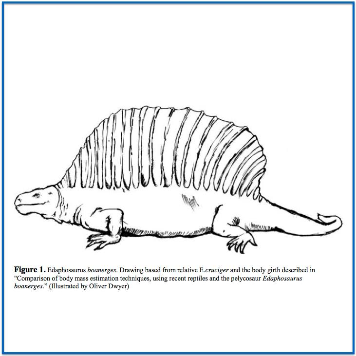
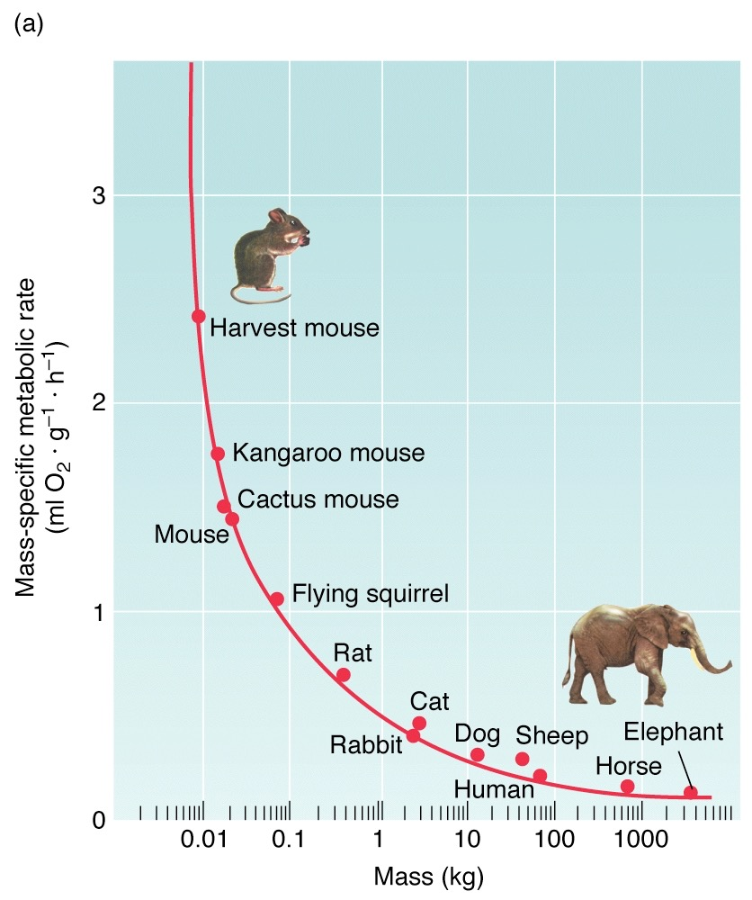
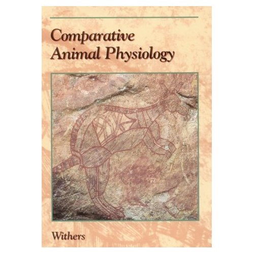

Introduction and The Big Idea
School of Life Sciences, University of Hawaii
2024-08-27
Stuff
If you are ever in doubt, please ask
Survey – Do this now!
Discord – Join for Q&A and extra credit
Website – Bookmark this! Also join the Google Drive - check your email.
Animal Physiology is the science of life and how it works
Design Project
Together with your partner, you will choose an extinct vertebrate to study.
- Background Research:
- Create a strong foundation for modeling your animalʻs biology and physiology
- Design Projects:
- Activity budget, metabolism and heat balance.
- Diet and digestion
- Respiration
- Osmoregulation and excretion
- How could your animal have met its environmental and physiological challenges? How did it live?

How??
Learning is more fun when it is real. It is your job, as scientists, to start from what we know, and figure out the rest.
Animal Physiology is the science of life and how it works
- Mechanistic as well as evolutionary explanations
- Internal to the organism as well as environmental context

Animal Physiology is the science of life and how it works

“Mouse to Elephant Curve”
Metabolic Rate is a Power Function of Body Mass
\[MR = a*Mass^b\]
Environmental context: Migration in Motion Visualization
Learning by doing —- Project Based
- Readings at home
- In-Class Discussion to flesh out ideas and push
- Homeworks challenge us to use the information
- Calculations prepare us for the Design Projects
- Building on the shoulders of giants
- Gathering background for best assumptions
- Short papers allow us to create new knowledge
- Oral Presentations test “work in progress”
- Peer and Instructor Reviews to hone work
- Final Draft - Voila!
Not Busywork!!
Goals
- Creativity
- Accuracy
- Authority
- Repeatability
- Communication
- Ease of dissemination to other researchers
- Show me, don’t tell me
Useful Mindsets
- Demand Excellence
- Criticism helps us to improve
- Developing a thick skin makes it easier!
- Learning is a developmental process - UNCOMFORTABLE
- Science is collaborative - Respect
- Thinking is improved through reflection and revision
- Effort and Attitude Counts — a LOT !!!
- Science is creative
- Mastery will prepare you for life
Learning is a Process
Letʻs Review
For Next Time
- Important!! Please complete the class survey
- Course Website: https://mbutler808.github.io/animalphys/ (grades on Laulima)
- Lab 1 — check website. Read before coming to lab - no prelab this week. Quiz is posted to Laulima 24 hrs prior to lab.
- Get your BOOK from SoLS Office StJohn 101 - $20 cash to rent
 Comparative Animal Physiology by Phillip C. Withers, 1992.